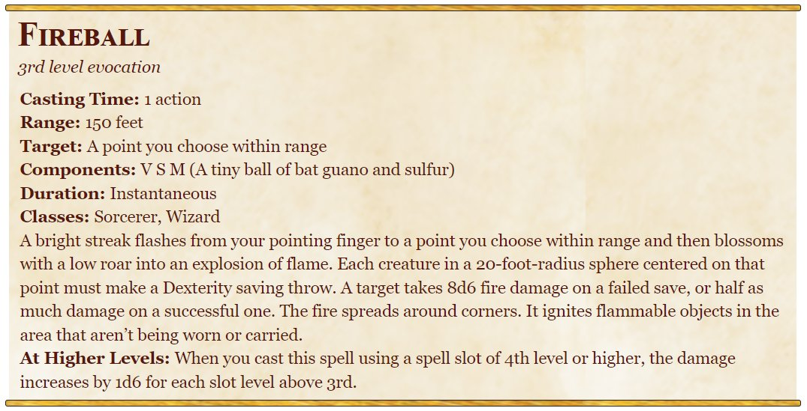

The Fireball Definition of AGI
A ludicrous but consistent definition of AGI that somehow makes more sense than most of the debate today.
Joseph Suarez is a newly minted MIT PhD and full-time RL exorcist. I build simple, ultra-high performance tools for reinforcement learning. It's all open source. You can support my work by starring PufferLib.
The Definition
Artificial General Intelligence exists when I (or anyone) can cast Fireball, a self-explanatory 3rd circle D&D spell.

...What?
I came up with this definition at OpenAI in 2018. It started as a joke but ended up making more sense than anything else I've heard since. It's a callback to that old quote about sufficiently advanced technology being indistinguishable from magic. When AI produces something that we unequivocally view as magic, AGI is solved.
Why is this useful?
My original intent was to use this definition not to start conversations -- but to end them. I thought too much time was being spent arguing over definitions instead of figuring out how to catapult humanity into a utopian era straight out of sci-fi. So I came up with a definition where splitting hairs just makes you look really dumb. @togelius had this awesome article comparing the AI philosophy debate to serious medieval discussion about how many angels can dance on the head of a pin. With the fireball definition of AGI, any debate splitting hairs about the specifics becomes not just ridiculous, but obviously ridiculous -- hopefully preventing discussions about dancing angels.
My troll definition also acts as defense against the dark arts. I've noticed a common rhetorical tactic that is similar to "moving the goalpost" but applied to definitions. You quietly redefine "general" or "intelligence" etc. and then slap "AGI" on as a brand or promise, and then when anyone calls you on it, you point to your definition that doesn't resemble the original at all. Aggressive definitions prevent this by leaving no room for willful misinterpretation.
Aren't you doing precisely the thing you're trying to avoid?
The fireball definition of AGI is for people who want to have fun and build stuff. You can argue whether having literal magic is a necessary condition for AGI under other more reasonable interpretations... but it's definitely a sufficient condition. I've had a consistent definition since 2018 (ask around, a few folks will remember it). How many people can claim that?